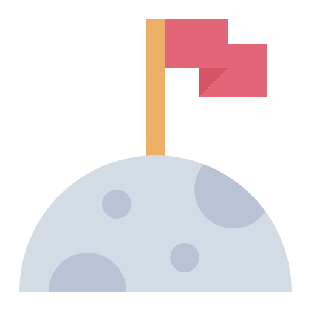

INGRESSO VIA ENEM

Ingressão utilizando a nota do ENEM
A Nebula oferece aos candidatos a possibilidade de utilizar a nota obtida no Exame Nacional do
Ensino Médio (ENEM) como uma forma alternativa de ingresso nas graduações da instituição.
O candidato que realizou o ENEM poderá solicitar a análise de sua pontuação, sem a necessidade de realizar o
Vestibular Unificado Nebula, conforme os critérios estabelecidos para cada curso.
Dúvidas Frequentes sobre o Ingresso via ENEM
-
O candidato deverá enviar seu Boletim de Desempenho Individual do ENEM por meio do formulário disponibilizado ao final desta página, para análise da instituição.
A avaliação considera as áreas de conhecimento do exame e a compatibilidade da pontuação obtida com os requisitos do curso escolhido.
Após a análise, o candidato receberá a confirmação da aprovação e as orientações para realizar sua matrícula. -
Para utilizar sua nota do ENEM como forma de ingresso, o candidato deve:
Acessar a plataforma oficial do participante do ENEM;
Emitir o boletim de desempenho com as notas obtidas no exame;
Enviar o documento solicitado por meio do formulário disponibilizado ao final desta página;
Aguardar a análise da equipe acadêmica. -
São aceitas as notas das três edições mais recentes do ENEM. O candidato deverá apresentar o Boletim de Desempenho Individual em formato PDF, emitido pela Página do Participante do ENEM, para análise da instituição.
-
Sim. Os candidatos que ingressarem utilizando a nota do ENEM poderão participar dos programas de bolsas, descontos e demais benefícios acadêmicos oferecidos pela Nebula.
-
Não. Caso o candidato seja aprovado pela modalidade de ingresso utilizando a nota do ENEM, ele poderá realizar sua matrícula utilizando exclusivamente sua nota do exame, seguindo as etapas de validação documental.
-
Após o envio do Boletim de Desempenho Individual do ENEM e da conclusão do formulário de inscrição, a equipe acadêmica realizará a análise da documentação. O candidato receberá o resultado por e-mail e poderá cadastrar-se no portal oficial da Nebula para acessar a Área do Candidato, onde acompanhará todas as etapas do processo de ingresso.